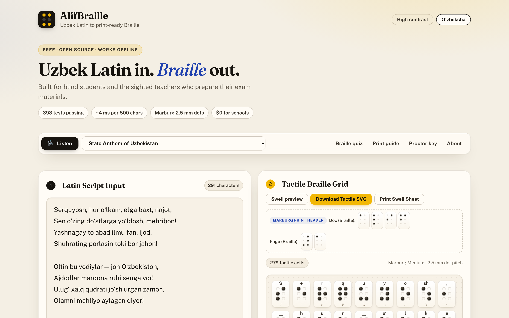
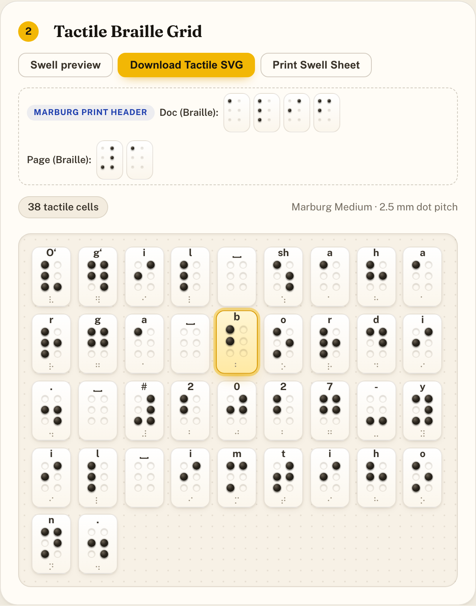
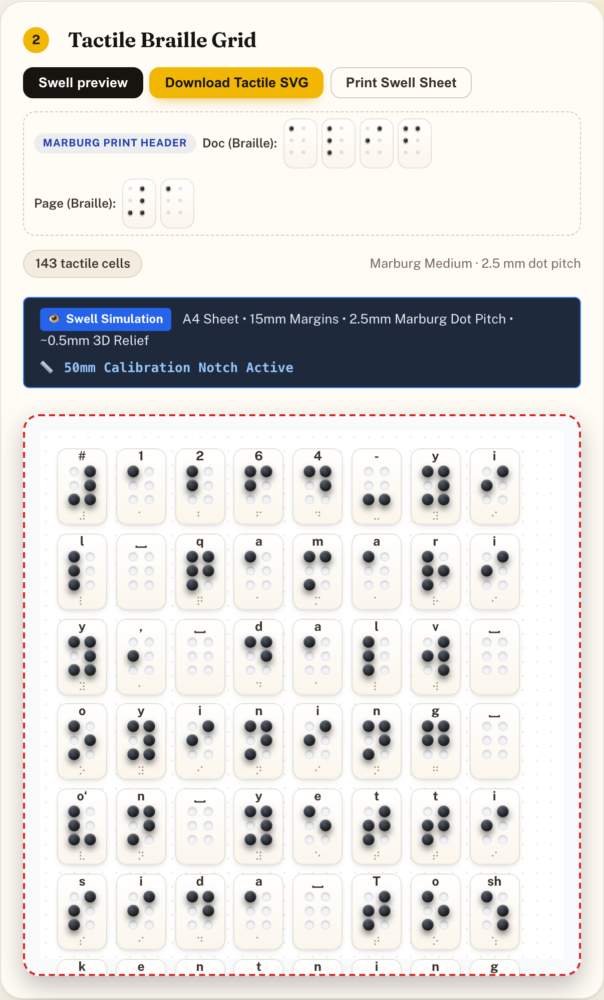
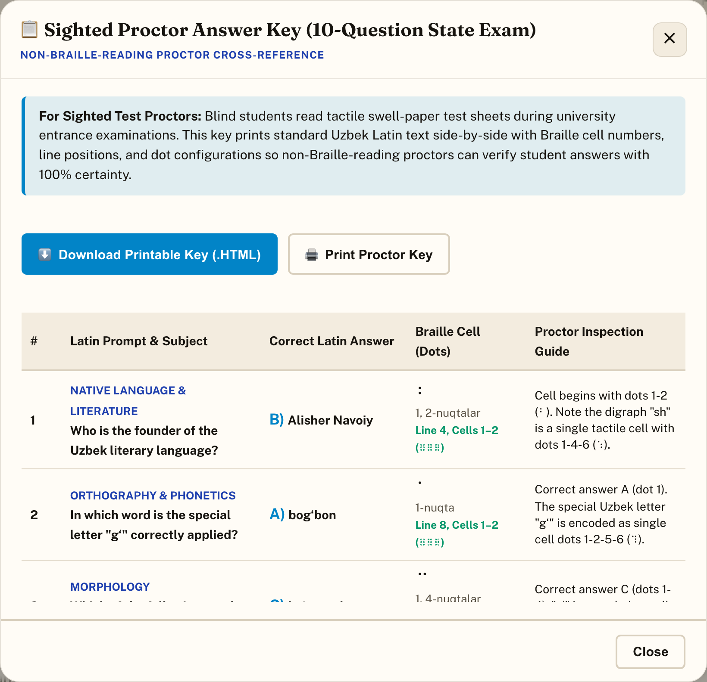

SXSW EDU · Student Impact Challenge 2027
AlifBraille is a free, open-source tool that gives blind students in Uzbekistan exam materials in the alphabet their exam is actually written in.
Elshod Kenjayev · Grade 11 · Presidential School in Tashkent, Uzbekistan
“alif” in 6-dot Braille: the first letter, the first step.
The problem
Uzbekistan’s schools, textbooks and university entrance exams now use the Uzbek Latin alphabet.
Most tactile books in specialized school libraries were produced in Cyrillic Braille.
Many teachers of blind students are sighted and don’t read Braille by touch, so they can’t verify a worksheet.
Blind students get fewer practice papers, later, in the wrong script, for the same exam everyone else takes.
Why existing tools fail
Braille shown is real output from the AlifBraille engine. Commercial Braille software doesn’t ship Uzbek Latin rules.
The solution
Runs in the browserWorks offlineFree · MIT license


Built for sighted teachers
As the text is read aloud, each Braille cell lights up in gold. A teacher hears “b” and sees the matching cell, so mistakes are caught on screen, not by a student’s fingertips on exam day.
Print-ready
Sheets follow the Marburg Medium standard for swell paper. Printers often shrink pages without asking; the 50 mm ruler shows it before an expensive imported sheet goes through the heater.


Ready for exam day
Where it stands today
The next 12 months
Convert exam practice sets with teachers at a school for visually impaired students.
Workshops on convert → check → print, and a free library of practice sheets.
Samarkand, the Fergana Valley, Bukhara; more subjects.
Karakalpak and Kazakh Latin: the next countries changing scripts.
Why me · What I’m asking for
I’m preparing for the same Latin-script exams as Uzbekistan’s blind students. I speak Uzbek, Russian and English, know both Uzbek alphabets, and built AlifBraille end to end on my own.
braille.elshod.xyz
github.com/Elshod09K/alifbraille
Elshod Kenjayev · Tashkent, Uzbekistan